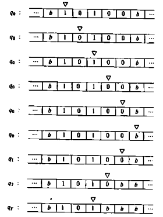

MK8BK's Technical Guides
This website is a fusion of a portfolio, a knowledge base and a blog.
C++ Notes
gcc
| Extension | File Type |
|---|---|
| .c | C source file |
| .cpp/.cc/.cxx | C++ source file |
| .o/.obj | Object file |
| .exe | Windows executable |
| no extension | Unix/Linux executable |
| .dll | Windows dynamic library |
| .lib | Windows static library |
| .so | Unix/Linux dynamic library |
| .a | Unix/Linux/MacOS static library |
| .dylib | MacOS dynamic library |
C
gcc -c x.c # compile c source file into x.o object file
gcc -c x.c y.c # compile c source files into x.o and y.o object files
gcc -o executable x.o y.o # link object files x.o and y.o into a single executable file
# compile and link source files x.c and y.c into a single executable file
gcc -o executable x.c y.c # intermediate object files are discarded
# compile and link source files x.c and y.c into a single executable file
# looks up any undefined symbols during linking in library named **libsomething**.
gcc -o executable x.c y.c -lsomething # -lABC -> search in libABC
C++
g++ -c x.cpp # compile cpp source file into x.o object file
g++ -c x.cpp y.cpp # compile cpp source files into x.o and y.o object files
g++ -o executable x.o y.o # link object files x.o and y.o into a single executable file
# compile and link source files x.cpp and y.cpp into a single executable file
g++ -o executable x.cpp y.cpp # intermediate object files are discarded
# compile and link source files x.cpp and y.cpp into a single executable file
# looks up any undefined symbols during linking in library named **libsomething**
g++ -o executable x.cpp y.cpp -lsomething # -lABC -> search in libABC
# specify C++ standard -> use -std=bruh flag
g++ -o prog main.cpp -std=c++17
C
A char type is always encoded using 8 bits \(\rightarrow\) just an integer type
with a fixed range.
An int type usually has the same size as the processor's registers.
\[8=taille(char)\leq taille(short)\leq taille(int) \leq taille(long) \leq taille(long \ long)\]
Operations on integer types ALWAYS return integer types: 3/2 \(\rightarrow\) 1.
IEEE-764 floating point encodings (most frequently used):
| type | # bits | # digits of precision |
|---|---|---|
| float | 4 | 6 |
| double | 8 | 15 |
| long double | 10 | 18 |
If a literal contains a point or exponent (e or E), then it is a floating type.
Otherwise, it is an integer type.
To use a different number base (ie: not decimal), prefix with 0b for binary,
0x for hexadecimal and 0 for octal.
In C: 'A' is of type int, in C++: it is of type char.
printf("\a"); // produces a sound
By default, 2.3 is of type double.
To specify a literals type, use a suffix (or a combination for unsigned types):
| type | suffix |
|---|---|
| char | none |
| short | none |
| int | none |
| long | L |
| long long | LL |
| float | F/f |
| double | none |
| long double | L |
| unsigned int | U/u |
Addresses and Pointers Nonsense:
char u; // a character
char *pu; // a pointer to a character
char *ppu; // a pointer to a pointer to a character
u = 2; // assign the value of the literal 2 to u
pu = &u; // assign the address of u to pu
ppu = &pu; // assign the address of pu to ppu
// pointer dereference, lines 13, 14 and 15 have the same effect
int a = 2;
int *pa = &a;
int **ppa = &pa;
a = 0;
*pa = 0;
**ppa = 0;
The value of a pointer is an address.
Pointer to Function Example:
#include <stdio.h>
int f(int n){
return n/2;
}
int main(){
int (*fp)(int) = &f;
printf("%d\n", (*fp)(8));
return 0;
}
Always initialize a pointer.
int *p1 = 0 // the only allowed int to pointer assignment!
int *p2 = NULL // same
p1 = nullptr; // preferable in std>=C++11
Enumerated int constants:
enum {f, t}; // f: 0, t: 1
enum {f=10, t, d=2}; // f: 10, t: 11, d: 2
Constants and pointers
int const *ptr;
// ptr is a pointer to constant int -> can't modify the pointed variable with this pointer.
int *const ptr = &x;
// ptr is a constant pointer to int -> can't modify the address stored in this pointer.
Theory of NP-Completeness
This chapter is a summary of the book "Computers and Intractability: A Guide to the Theory of NP-Completeness" - Michael R.Garey / David S. Johnson.
Basics
Purpose:
"In short, the primary application of the theory of \(NP\)-completeness
is to assist algorithm designers in directing their problem-solving efforts
towards those approaches that have the greatest likelihood of leading to
useful algorithms"
Definition
\(f(n)\) is \(O(g(n))\) if there exists a constant \(c\) such that \(|f(n)|\leq c\cdot|g(n)|\) for all values of \(n\).
Definition
A problem is intractable if no polynomial time algorithm can possibly solve it.
Two cases of intractability
- A problem is so difficult that an exponential amount of time is required to find a solution.
- A solution to the problem cannot be encoded into an expression having
length bounded by a polynomial fuction of the input length.
\(\longrightarrow\) only problems for which the solution length is bounded by a polynomial function of the input length will be considered.
Definition
A problem is said to be undecidable if no algorithm at all can be given for solving it.
Examples
- The halting problem is undecidable: it is impossible to specify an algorithm which, given an arbitrary computer program and an arbitrary input to that program, can decide whether or not the program will eventually halt when applied to that input.
- Hilbert's tenth problem: solvability of polynomial equations in integers.
- The triviality problem for finitely presented groups [Rabin 1958].
Remark Undecidable problems are intractable.
Definition
A problem is said to be non-deterministically intractable if it cannot be solved in polynomial time using a non-deterministic computer model, which has the ability to pursue an unbounded number of independant computational sequences in parallel.
Remark All provably intractable problems known to date are either undecidable or non-deterministically intractable.
Definition
- NP is the set of decision problems solvable in polynomial time by a nondeterministic Turing machine.
- NP is the set of decision problems verifiable in polynomial time by a deterministic Turing machine.
Reduction is a technique used for demonstrating that two problems are related to one another, by giving a constructive transformation that maps any instance of the first problem into an equivalent instance of the second.
The Complexity of Theorem Proving Procedures - paper by Cook
- Polynomial time reducibility: If we have a polynomial time reduction from one problem to another, this ensures that any polynomial time algorithm for the second problem can be converted into a polynomial time algorithm for the first problem.
- Most of the apparently intractable problems encountered in practice, when phrased as decision problems belong to the class of \(NP\) decision problems that can be solved in polynomial time by a non-deterministic computer.
- Every problem in NP can be polynomially reduced to the satisfiability problem.
The satisfiability problem is the "hardest" problem in \(NP\).
The problem "Does a graph \(G\) contain a complete subgraph on a given number \(k\) of vertices?" also has this property.
The class of these "hardest" problems in \(NP\) has been shown to include many other problems by Richard Karp in 1972. See this page for more details.
The equivalence class of the Satisfiability problems is called the set of \(NP\)-complete problems.
Here is a more concrete definition from wikipedia:
A problem is \(NP\)-complete if:
- It is a decision problem, meaning that for any input to the problem, the output is either "yes" or "no".
- When the answer is "yes", this can be demonstrated through the existence of a short (polynomial length) solution.
- The correctness of each solution can be verified quickly (namely, in polynomial time) and a brute-force search algorithm can find a solution by trying all possible solutions.
- The problem can be used to simulate every other problem for which we can verify quickly that a solution is correct. In this sense, NP-complete problems are the hardest of the problems to which solutions can be verified quickly. If we could find solutions of some NP-complete problem quickly, we could quickly find the solutions of every other problem to which a given solution can be easily verified.
Open Question: are the \(NP\)-complete problems intractable ?
The Theory of NP-Completeness
Decision Problems, Languages and Encoding Schemes
The theory of \(NP\)-completeness is designed to be applied only to decision problems.
A Decision problem is a problem with only two possible solutions: "yes" and "no".
Definition A decision problem \(\Pi\) consists of a set \(D_\Pi\) of instances and a subset \(Y_\Pi \subseteq D_\Pi\) of yes-instances.
\(\rightarrow\) a more practical approach is to define a generic instance using a set of various components (graphs, functions, numbers, sets) and a yes-no question asked in terms of the generic instance.
An instance belongs to \(D_\Pi\) iff it can be obtained from a generic instance by substiting particular objects of the specified types for all the generic components.
An instance belongs to \(Y_\Pi\) iff the answer to the stated question, when particularized to that instance, is "yes".
Examples
-
Subgraph Isomorphism
Instance: Two graphs \(G_1=(V_1, E_1)\) and \(G_2=(V_2, E_2)\).
Question: Does \(G_1\) contain a subgraph isomorphic to \(G2\), that is, a subset \(V'\subseteq V_1\) and a subset \(E'\subseteq E_1\) such that \(|V'|=|V_2|\), \(|E'|=|E_2|\), and there exists a one-to-one function \(f: V_2 \rightarrow V'\) satisfying \(\{u, v\}\in E_2\) iff \(\{f(u), f(v)\}\in E'\) ?
-
Traveling Salesman
Instance: A finite set \(C=\{c_1, ..., c_m\}\) of "cities", a "distance" \(d(c_i, c_j)\in\mathbb{Z}^+\) for each pair of cities \(c_i, c_j \in C\) , and a bound \(B\in\mathbb{Z}^+\).
Question: Is there a "tour" of all the cities in \(C\) having total length no more than \(B\), that is an ordering \(< c_{\pi(1)}, ..., c_{\pi(m)} >\) of \(C\) such that
\[(\sum_{i=1}^{m-1}{d(c_{\pi(i)}, c_{\pi(i+1)})}) + d(c_{\pi(m)}, c_{\pi(1)}) \leq B ?\]
The traveling salesman problem variant described above is an example of how a non decision problem can be transformed into a decision problem.
Definition
For any finite set \(\Sigma\) of symbols, we denote by \(\Sigma^* \) the set of all finite strings of symbols from \(\Sigma\). If \(L\) is a subset of \(\Sigma^* \), we say that \(L\) is a language over the alphabet \(\Sigma\).
Examples
- If \(\Sigma=\{0, 1\}\) then \(\Sigma^* \) consists of the empty string "\(\epsilon\)", the strings \(0, 1, 00, 01, 11, 000, 001\) and all other finite strings of \(1\)'s and \(0\)'s.
- \(\{01, 001, 111, 1101010\}\) is a language over \(\{0, 1\}\), as is the set of all binary representations of integers that are perfect squares, as is \(\{0, 1\}^* \) itself.
Definition
An encoding scheme \(e\) for a problem \(\Pi\) provides a way of describing each instance of \(\Pi\) by an appropriate string of symbols over some fixed alphabet \(\Sigma\).
Remark
The problem \(\Pi\) and the encoding sceme \(e\) for \(\Pi\) partition \(\Sigma^* \) intro three classes of strings:
- those that are not encodings of instances of \(\Pi\).
- those that encode instances of \(\Pi\) for which the answer is "no".
- those that encode instances of \(\Pi\) for which the answer is "yes".
Definition
Assuming that \(\Sigma\) is the alphabet used by \(e\), the language associated to the problem \(\Pi\) and the encoding \(e\) is denoted : \[ L[\Pi, e] = \{x\in\Sigma^* : x\ is\ the\ encoding\ under\ e\ of\ an \ instance\ I\in Y_{\Pi}\}. \]
Lemma If a result holds for the language \(L[\Pi, e]\), then it holds for the problem \(\Pi\) under the encoding scheme \(e\).
Assuming the encodings we employ are "reasonable" most properties are encoding-independant.
We assume that every decision problem \(\Pi\) has an associated encoding-independant function \(Length: D_\Pi \rightarrow\mathbb{N}\), which is "polynomially related" to the input lengths we would we would obtain from a reasonable encoding scheme.
A Standard Encoding Scheme
The alphabet used is \(\Psi=\{ 0 , 1 , - , [ , ] , ( , ) , , \} \).
We define structured strings recursively:
- An integer \(k\) is represented by a string of \(0\)'s and \(1\)'s preceded by a minus sign "\(-\)" if \(k\) is negative.
- If \(x\) is a structured string representing the integer \(k\), then \([x]\) is a structured string that can be used as a "name". (for examples: a vertex in a graph, a set element, a city in the traveling salesman problem).
- If \(x_1, \dots, x_m\) are structured strings representing the objects \(X_1, ..., X_m\), then \((x_1, ..., x_m)\) is a structured string representing the sequence \(< X_1, ..., X_m >\).
We already know how to encode integers and sequences.
- A set is represented by ordering its elements as a sequence \(< X_1, ..., X_m >\) and taking the structured string corresponding to that sequence.
- A graph with vertex set \(V\) and edge set \(E\) is represented by a structured string \((x, y)\), where \(x\) is a structured string representing the set \(V\) and \(y\) is a structured string representing the \(E\) (the elements of \(E\) being the two-element subsets of \(V\) that are edges).
- A finite function \(f: \{U_1, ..., U_m\}\rightarrow W\) is represented by a structured string \(((x_1, y_1), ... ,(x_m, y_m))\) where \(x_i\) is a structured string representing the object \(U_i\) and \(y_i\) a structured string representing the object \(f(U_i)\in W\) , \(\forall \ 1\leq i\leq m\).
- A rational number \(q\) is represented by a structured string \((x,y)\) where \(x\) is a structured string representing an integer \(a\), \(y\) is a structured string representing an integer \(b\), \(a/b=q\), and \(GCD(a, b)=1\).
Two structured strings written in the standard encoding schemes can represent a same object without being strictly the same.
From now on, an encoding scheme is said to be reasonable if it is equivalent to the standard encoding scheme, in the sense that there exist polynomial time algorithms for converting an encoding of an instance back and forth between the two encoding schemes.
Deterministic Turing Machines and the Class P
Definition
A Deterministic One-Tape Turing Machine (DTM) is a model of computation which consists of a finite state control, a read-write head and a two-way infinite tape of squares labeled (\(..., -2, -1, 0, 1, 2, ...\)).

Definition
A program for a DTM specifies the following information:
- A finite set \(\Gamma\) of tape symbols, including a subset \(\Sigma\subset\Gamma\) of input symbols and a distinguished blank symbol \(b\in\Gamma\backslash\Sigma\);
- a finite set \(\mathcal{Q}\) of states, including a distinguished start-state \(q_0\) and two distinguished halt-states \(q_Y\) and \(q_N\);
- a transition function \(\delta: (\mathcal{Q}\backslash\{q_Y, q_N\})\times\Gamma\rightarrow \mathcal{Q}\times\Gamma\times\{-1, +1\}\).
Operation of a DTM program
The input to the DTM is a string \(x\in\Sigma^*\).
All the tape squares initially contain the blank symbol \(b\).
The string \(x\) is placed in tape squares 1 through \(|x|\).
The program starts its operation in state \(q_0\), with the head scanning tape square \(1\).
At each step:
- If the current state \(q\) is either \(q_Y\) or \(q_N\), then the computation has ended, with the answer being "\(yes\)" if \(q=q_Y\) or "\(no\)" if \(q=q_N\).
- Else we have \(q\in \mathcal{Q}\backslash \{q_Y, q_N\}\) and there is a symbol \(s\) in the tape square being scanned. The value of the transition function can be computed: \(\delta(q, s)=(q', s', \Delta)\). The read write head then replaces the symbol \(s\) by \(s'\) in the current square, it then moves one square right if \(\Delta=1\) or one square left if \(\Delta=-1\). The finite state control updates the state value from \(q\) to \(q'\).
Definition
We say that a DTM program \(M\) with input alphabet \(\Sigma\) accepts \(x\in\Sigma^*\) if and only if \(M\) halts in state \(q_Y\) when applied to input \(x\).
Definition : The language \(L_M\) recognized by the program \(M\) is given by \(L_M = \{x\in\Sigma^*: M \ accepts\ x\}\).
If \(x\in(\Sigma^*\backslash L_M)\) then either the computation of \(M\) on \(x\) halts in state \(q_N\) or it does not halt ie: continues forever.
Definition
We say that a DTM program \(M\) solves the decision problem \(\Pi\) under encoding scheme \(e\) if \(M\) halts for all input strings over its input alphabet and \(L_M = L[\Pi, e]\).
Example: Integer Divisibility by four.
Instance: A positive integer \(N\).
Question: Is there a positive integer \(m\) such that \(N=4m\)?
Using the standard encoding scheme, the integer \(N\) is represented by the string of \(0\)'s and \(1\)'s that is its binary representation.
\[ \Gamma=\{0, 1, b\}, \Sigma=\{0, 1\} \\ \mathcal{Q}=\{q_0, q_1, q_2, q_3, q_Y, q_N\} \\ \delta(q_0, 0)=(q_0, 0, +1), \ \delta(q_0, 1)=(q_0, 1, +1)\\ \delta(q_0, b)=(q_1, b, -1), \ \delta(q_1, 0)=(q_2, b, -1)\\ \delta(q_1, 1)=(q_3, b, -1), \ \delta(q_1, b)=(q_N, b, -1)\\ \delta(q_2, 0)=(q_Y, b, -1), \ \delta(q_2, 1)=(q_N, b, -1)\\ \delta(q_2, b)=(q_N, b, -1), \ \delta(q_3, 0)=(q_N, b, -1)\\ \delta(q_3, 1)=(q_N, b, -1), \ \delta(q_3, b)=(q_N, b, -1)\\ M=(\Gamma, \mathcal{Q}, \delta). \]
Here as example of the execution of this program on the string \(x=10100\).

The language \(L_M\) recognized by the program \(M\) is given by \(L_M = \{x\in\Sigma^*: M\ accepts \ x\}\).
It can be shown that \(L_M\) is exactly the language
\[ \{x\in\{0, 1\}^*: the \ rightmost \ two \ symbols \ of \ x \ are \ both \ 0 \}. \]
Since an integer \(N\) is divisible by \(4\) if and only if the last two digits of its binary representation are \(0\), the DTM program \(M\) solves the INTEGER DIVISIBILITY BY FOUR problem.
Remark: A DTM program can compute functions. Suppose \(M\) is a DTM with input alphabet \(\Sigma\) and tape alphabet \(\Gamma\) that halts for all input strings from \(\Sigma^*\). Then \(M\) computes the function \(f_M : \Sigma^* \rightarrow \Gamma^*\) where for each \(x \in \Sigma^*\), \(f_M(x)\) is defined to be the contiguous string obtained by running \(M\) on input \(x\) until it halts; from tape position 1 up to but not including the first blank symbol.
The time used in the computation of a DTM program \(M\) on an input \(x\) is the number of steps occuring in that computation up until the first halt state is entered.
Definition For a DTM program \(M\) that halts on all inputs \(x\in\Sigma^*\), its time complexity function \(T_M: \mathbb{Z}^+\rightarrow\mathbb{Z}^+\) is given by:
\[ T_M(n) = max \{m: there \ is \ a \ string \ x\in\Sigma^* of \ length \\ \ n \ on \ which \ the \ computation \ of \ M \ takes \ time \ m \} \]
Remark \(M\) is a polynomial time DTM program if there exists a polynomial \(p\) such that \(\forall n \in \mathbb{N} : T_M(n)\leq p(n)\).
Definition
\[ P = \{L: there \ exists \ a \ polynomial \ time \ DTM \ program \\ \ M \ for \ which \ L=L_M\}. \]
We say that a decision problem \(\Pi\) belongs to \(P\) under the encoding scheme \(e\) if \(L[\Pi, e]\in P\), ie there is a polynomial time DTM program that solves \(\Pi\) under the encoding \(e\).
If a decision problem \(\Pi\in P\) then its complementary problem is also in \(P\), this is not necessarily the case for a problem in \(NP\).
Nondeterminstic Computation and the class NP
The class \(NP\) is intended to isolate the notion of polynomial time "verifiability", which does not imply polynomial time solvability.
A nondeterministic algorithm is composed of two separate stages, the first being a guessing stage and the second a checking stage. Given a problem instance \(I\), the first stage guesses a structure \(S\). \(I\) and \(S\) are then passed as inputs to the checking stage, which performs deterministic computations to verify if the structure \(S\) proves that the answer to \(I\) is "yes".
A nondeterministic algorithm solves a decision problem \(\Pi\) iff :
- If \(I\in Y_{\Pi}\), then there exists some structure \(S\) that, when guessed for input \(I\), will lead the checking stage to respond "yes" for \(I\) and \(S\).
- If \(I\notin Y_{\Pi}\), then there exists some structure \(S\) that, when guessed for input \(I\), will lead the checking stage to respond "yes" for \(I\) and \(S\).
Definitions
A NonDeterministic one-tape Turing Machine (NDTM) is a computation model composed of a finite state control, a read-write head , a two-way infinite tape of squares labeled (\(..., -2, -1, 0, 1, 2, ...\)) and a guessing module having a write-only head.

An NDTM program is specified in exactly the same way as \(DTM\) program. This includes the tape alphabet \(\Gamma\), input alphabet \(\Sigma\), blank symbol \(b\), state set \(\mathcal{Q}\), initial state \(q_0\), halt states \(q_Y\) and \(q_N\) and transition function \(\delta: (\mathcal{Q} \backslash \{q_Y, q_N\})\times\Gamma \rightarrow \mathcal{Q}\times\Gamma\times\{-1, +1\}\)
The computation of an NDTM on an input string \(x\in\Sigma^*\) differs from that of a DTM in that it takes place in two distinct stages:
- the guessing stage:
- the input string \(x\) is written in tapes \(1\) through \(|x|\). All other squares contain the blank character.
- the read-write head is scanning square \(1\), while the write-only head is scanning square \(-1\), the finite state control is inactive.
- the guessing module then directs the write-only head, one step at a time, either to write some symbol from \(\Gamma\) in te tape square being scanned and move one square to the left, or to stop, at which point the guessing module becomes inactive.
The finite state control is then activated in state \(q_0\).
- the checking stage:
- the guessing module and its write-only head are no longer involved, having fulfilled their role by guessing a string on the tape.
- the computation proceeds solely under the direction of the NDTM program according to exactly the same rules as for a DTM.
- the guessed string can (and usually will) be examined during this stage.
- The computation ceases when and if the finite state control enters one of the two halting states and is said to be an accepting computation if it halts in state \(q_Y\). All other computations, halting or not are classified as non-accepting computations.
The choice of whether to remain active, and, if so, which symbol to write, is made by the guessing module in a totally arbitrary manner. An important consequence is that the guessing module can write any string from \(\Gamma^*\) before it halts (if it ever does).
Properties
An NDTM program \(M\) has an infinite number of possible computations for a given input string \(x\), one for each possible guessed string from \(\Gamma^*\).
An NDTM program \(M\) accepts \(x\) if at least one of these is an accepting computation.
The language recongnized by \(M\) is \[L_M = \{x\in\Sigma^* : M \ accepts \ x\}\]
The time required by an NDTM program \(M\) to accept the string \(x\in L_M\) is the minimum, over all accepting computations of \(M\) for \(x\) of the number of steps ocurring in the guessing and checking stages up until the halt state \(q_Y\) is entered.
The time complexity function \(T_M: \mathbb{Z}^+\rightarrow\mathbb{Z}^+\) for \(M\) is \[ T_M(n) = max (\{1\}\cup\{m: \exists x\in\Sigma^* with \ |x|=n \ \ s.t. \ the \ time \ to \ accept \ x \ by \ M \ is \ m \}) \]
The time complexity function for \(M\) depends only on the number of steps occurring in accepting computations. By convention, \(T_M(n)\) is \(1\) for whenever no inputs of length \(n\) are accepted by \(M\).
The NDTM program \(M\) is a polynomial time NDTM program if there exists a polynomial \(p\) such that \(\forall n\geq 1: \ T_M(n)\leq p(n) \).
Definition \[ NP = \{L: there \ is \ a \ polynomial \ time \ NDTM \ program \ M \ for \ which \ L_M=L\} \]
A decision problem \(\Pi\) will be said to belong to \(NP\) under encoding scheme \(e\) if the language \(L[\Pi, e]\in NP\)
Heuristic We identify \(NP\) with the class of all decision problems "solvable" by polynomial time nondeterministic algorithms.
The Relationship between P and NP
Proving NP-Complete Results
Ocaml Functional Programming
Ninety-Nine Problems in Ocaml
Exercise 1: Tail of a List
Write a function that returns the last element of a list.
last : 'a list -> 'a option
Show Solution
let rec last (l: 'a list): 'a option =
match l with
| [] -> None
| [e] -> Some e
| _::tail -> last tail
Explanation
Here we are defining a recursive function in OCaml.
Notice the optional type hints. The function takes a (homogenous) list l
of a generic type 'a ('SOMETHING is OCaml syntax for generic types).
If the list is empty, we return None, there is no last element.
If the list contains a single element e, return Some e.
Otherwise, discard the first element _ and call last on the rest of the list.
'a option is OCaml's solution to the billion dollar
mistake of the NullPointerException. All values in OCaml are non-null.
The option type allows us to deal with a case where a "null" value would be useful.
type 'a option =
| Some 'a
| None
The compiler will force you to handle None values in option types.
The e::l operation appends element e to the beginning of the list l.
The match allows us to perform different action based on the form of the list
l. It is basically an switch statement on steroids that allows us to
deconstruct a value of any type into its possible forms.
The compiler will force you to handle all possible forms of the input type.
Exercise 2: Last Two Elements of a List
Find the last but one (last and penultimate) elements of a list.
last_two : 'a list -> ('a * 'a) option
Show Solution
let rec last_two (l: 'a list): ('a * 'a) option =
match l with
| []
| [_] -> None
| e1::e2::[] -> Some (e1, e2)
| _::rest -> last_two rest
Explanation
Same idea, minor tweaks. We are returing a product type ie: tuple.
If the list contains exactly two elements e1 and e2, return the tuple
(e1, e2) wrapped in Some (we HAVE to return an option type).
If the list contains 0 or 1 elements, return None, we can match both cases
with one arrow.
Otherwise if the list contains 3 or more elements, discard the first one
and call last_two on the rest of the list.
Exercise 3: N'th Element of a List
Find the N'th element of a list.
nth: 'a list -> int -> 'a option
Show solution
let rec nth (lst: 'a list) (k: int): 'a option =
match (k, lst) with
| (_, []) -> None
| (0, x::_) -> Some x
| (k, _::rest) -> nth rest (k-1)
This function still returns None for negative values.
Exercise 4: Length of a List
Find the number of elements of a list.
length: 'a list -> int
Show solution
let rec length (lst: 'a list): int =
match lst with
| [] -> 0
| _::rest -> 1 + length rest
Explanation
The length of an empty list is 0.
The length of a list having a first element is one plus the length of the rest of the list.
Here is a tail recursive version.
let rec length (lst: 'a list): int =
(* Define an inner auxiliary function *)
let rec aux (lst: 'a list) (sofar: int): int =
match lst with
| [] -> sofar
| _::rest -> aux rest (sofar + 1)
(* return this expression that uses the auxiliary function *)
in aux lst 0
Exercise 5: Reverse a List
Reverse a List
rev: 'a list -> 'a list
Show solution
let rec rev (lst: 'a list): 'a list =
let rec aux (reversed: 'a list) (remaining: 'a list): 'a list =
match (reversed, remaining) with
| (reversed, []) -> reversed
| (reversed, x::tail) -> aux (x::reversed) tail
in aux [] lst
Exercise 6: Duplicate the Elements of a List
Duplicate the Elements of a List.
dupl: 'a list -> 'a list
Show solution
let rec dupl (lst: 'a list): 'a list =
match lst with
| [] -> []
| x::rest -> x::x::(dupl rest)
Exercise 7: Split a List Into Two Parts
Split a list into two parts; the length of the first part is given.
If the length of the first part is longer than the entire list, then the first part is the list and the second part is empty.
split: 'a list -> int -> 'a list * 'a list
Show solution
let split (l: 'a list) (n: int): 'a list * 'a list =
let rec aux (f: 'a list) (l: 'a list) (r: int) : 'a list * 'a list =
match (r, l) with
| (0, l)
| (k, []) -> (List.rev f, l)
| (k, x::rest) -> aux (x::f) (rest) (k-1)
in aux [] l n
Exercise n: ptitle
pdescription
psig
Show solution
(* solution *)
Explanation
pexpl
Lambda Calculus
Maths de 1er cycle
Logique
Suites
Fonctions
Continuite
Derivation
Series
Arithmetique
Groupes
Anneaux
Corps
Actions de Groupe
Algebre Lineaire
Reduction des Endomorphismes
Soit \(\mathbb{K}\) un corps.
Soit \(E\) un \(\mathbb{K}\)-espace vectoriel.
Soit \(u: E \rightarrow E\) un endomorphisme de \(E\).
Definition 1
Un sous-espace vectoriel \(F\) de \(E\) est dit stable par \(u\) si \(u(F)\subset F\).
Proposition 1
Si les endomorphismes \(u\) et \(v\) de \(E\) commutent, c'est a dire si \(u\circ v = v\circ u\) , alors \(Ker(v)\) et \(Im(v)\) sont stables par \(u\).
Proposition 2
Si \(F\) est un sous-espace vectoriel de \(E\) engendré par une famille \((e_i)_{i \in I}\), alors \(F\) est stable par \(u\) ssi: \[\forall i \in I\quad u(e_i) \in F.\]
Corollaire 3: traduction matricielle de la stabilité
Soit \(F\) un sous-espace vectoriel de \(E\) de dimension \(p\) et \(\mathcal{B}=(e_1, ..., e_n)\) une base de E adaptée a \(F\), c'est a dire telle que \(\mathcal{B}' = (e_1, ..., e_p)\) soit une base de \(F\).
Alors \(F\) est stable par \(u\) ssi sa matrice dans la base \(\mathcal{B}\) est de la forme \(\begin{pmatrix}A & C\\0 & B\end{pmatrix}\), avec \(A\in \mathcal{M}_p(\mathbb{K})\).
Dans ce cas, \(A\) est la matrice dans la base \(\mathcal{B}'\) de l'endomorphisme induit \(u_F\).
Definition 3
- On dit que \(\lambda \in \mathbb{K}\) est valeur propre de \(u\) s'il existe un vecteur non nul \(x \in E\) tel que \(u(x) = \lambda x\), c'est a dire si l'endomorphisme \(u - \lambda Id_E\) est non injectif.
- On dit que \(x \in E\) est vecteur propre de \(u\) associee a la valeur propre \(\lambda\in\mathbb{K}\) s'il est non nul et vérifie \(u(x)=\lambda x\).
- Si \(\lambda \in \mathbb{K}\) est valeur propre de \(u\), le sous-espace propre de \(u\) associé a la valeur propre \(\lambda\) est: \[E_\lambda (u)=Ker(u-\lambda Id_E)= \{x\in E : u(x)=\lambda x\}.\]
Definition 4
Le spectre d'un endomorphisme d'un espace de dimension finie est l'ensemble de ses valeurs propres.
Proposition 5
Si les endomorphismes \(u\) et \(v\) commutent, c'est a dire si \(u\circ v = v\circ u\), alors les sous-espaces propres de l'un sont stables par l'autre.
Proposition 6
- Si \(\lambda_1, ..., \lambda_p\) sont des valeurs propres deux a deux deux distinctes de \(u\), alors les sous-espaces propres associés \(E_{\lambda_1}(u), ..., E_{\lambda_p}(u)\) sont en somme directe.
- Toute famille de vecteurs propres associés a des valeurs propres deux a deux distinctes est libre.
Corollaire 7
Si \(E\) est de dimension finie et si \(\lambda_1, ..., \lambda_p\) sont des valeurs propres deux a deux distinctes de \(u\), alors: \[ \sum_{i=1}^{p}{dim(E_{\lambda_i} (u))} \leq dim(E) \]
Corollaire 8
Un endomorphisme d'un espace vectoriel de dimension \(n\) a au plus \(n\) valeurs propres distinctes.
Proposition 9
Si \(F\) est un sous-espace vectoriel de \(E\) stable par \(u\), les valeurs propres de l'endomorphisme \(u_F\) induit par \(u\) sur \(F\) sont les valeurs propres \(\lambda\) telles que \(E_\lambda(u)\cap F \neq \{0\}\). On a alors: \[E_\lambda(u_F) = E_\lambda(u)\cap F.\]
Proposition 10
Si \(f\) est un endomorphisme de \(E\) et si \(\mathcal{B}\) et \(\mathcal{B}'\) sont deux bases de \(E\), alors les matrices \(M\) et \(M'\) de \(f\) respectivement dans les bases \(\mathcal{B}\) et \(\mathcal{B}'\) sont reliés par: \[M' = P^{-1}MP,\] ou \(P\) est la matrice de passage de \(\mathcal{B}\) a \(\mathcal{B}'\).
Definition 5
Deux matrices \(A\) et \(B\) sont semblables s'il existe \(P\in GL_n(\mathbb{K})\) telle que \(B=P^{-1}AP\).
Proposition 11
Deux matrices \(M\) et \(M'\) de \(\mathcal{M}_n (\mathbb{K})\) sont semblables ssi elles representent le meme endomorphisme de \(\mathbb{K}^n\), c'est a dire s'il existe \(\mathcal{B}\) et \(\mathcal{B}'\) deux bases de \(\mathbb{K}^n\) et \(f\in \mathcal{L}(\mathbb{K}^n)\) telles que:
\[ M=Mat_{\mathcal{B}}(f) \quad et \quad M'=Mat_{\mathcal{B}'}(f). \]
Proposition 12
Deux matrices semblables ont meme trace et meme determinant.
Definition 6
Soit \(A\in \mathcal{M}_n(\mathbb{K})\)
- On dit que \(\lambda\in\mathbb{K}\) est valeur propre de \(A\) s'il existe une matrice colonne \(X\in\mathcal{M}_{n,1}(\mathbb{K})\) non nulle telle que \(AX=\lambda X\).
- On dit que la matrice colonne \(X\in \mathcal{M}_{n,1}(\mathbb{K})\) est vecteur propre de \(A\) associée a la valeur propre \(\lambda\in\mathbb{K}\) si elle est non nulle et vérifie \(AX=\lambda X\).
- Si \(\lambda\in\mathbb{K}\) est valeur propre de \(A\), le sous-espace propre de \(A\) associée a la valeur propre \(\lambda\) est: \[E_\lambda (A)=Ker(A-\lambda I_n)= \{X\in \mathcal{M}_{n,1}(\mathbb{K}): AX=\lambda X\}.\]
- L'ensemble des valeurs propres de \(A\) est appelé le spectre de \(A\) et noté \(sp(A)\).
Proposition 13
Soit \(A\) une matrice représentant l'endomorphisme \(u\) dans une base \((e_1, ..., e_n)\). On a alors \(sp(A)=sp(u)\) et, pour tout \(\lambda\in sp(u)\): \[ x = \sum_{i=1}^{n}{x_i e_i} \in E_\lambda (u) \iff X= \begin{bmatrix} x_1 \\ \vdots \\ x_n \\ \end{bmatrix} \in E_\lambda (A). \]
Corollaire 14
Deux matrices semblables ont meme spectre et les sous-espaces propres associés sont de meme dimension.
Proposition 15
Soit \(\mathbb{K}'\) un sous-corps du corps \(\mathbb{K}\) et \(A\in\mathcal{M}_n(\mathbb{K}')\). Alors
\[sp_{\mathbb{K}'}(A) \subseteq sp_{\mathbb{K}}(A)\]
Proposition 16
Soit \(A\in \mathcal{M}_n(\mathbb{R})\). Si \(\lambda\in sp_\mathbb{C}(A)\) , alors \(\overline\lambda\) est valeur propre de \(A\) et:
\[ X\in E_\lambda (A) \iff \overline X \in E_{\overline\lambda}(A). \]
Si \((X_1, ..., X_k)\) est une base de \( E_\lambda (A) \) alors \((\overline X_1, ..., \overline X_k)\) est une base de \( E_\overline\lambda (A) \) donc \(dim(E_\lambda (A))=dim(E_\overline\lambda (A))\).
Definition 7
Soit \(u\in\mathcal{L}(E)\) et \(P=\sum_{k=0}^{p}{a_k X^k} \in\mathbb{K}[X]\).
On note \(P(u)\) l'endomorphisme de \(E\) defini par:
\[ P(u) = \sum_{k=0}^{p}{a_k u^k} . \]
Pour \(A\in \mathcal{M}_n (\mathbb{K})\), on definit de meme la matrice \(P(A)\in\mathcal{M}_n (\mathbb{K})\) par:
\[ P(A) = \sum_{k=0}^{p}{a_k A^k} . \]
Proposition 17
Pour tout \((P, Q)\in\mathbb{K}[X]^2\), les endomorphismes \(P(u)\) et \(Q(u)\) commutent. En particulier, pour tout \(P\in\mathbb{K}[X]\), \(Im(u)\) et \(Ker(u)\) sont des sous-espaces stables par \(u\).
Proposition 18
- Si \(x\in E_\lambda (u)\) et si \(P\in\mathbb{K}[X]\) alors \(P(u)(x) = P(\lambda) x\).
- En particulier, si \(\lambda\) est valeur propre de \(u\), alors \(P(\lambda)\) est valeur propre de \(P(u)\) et tout vecteur propre de \(u\) associé a la valeur propre \(\lambda\) est vecteur propre de \(P(u)\) associé la valeur propre \(P(\lambda)\).
Corollaire 19
Soit \(A\in\mathcal{M}_n(\mathbb{K})\).
- Si \(X\in E_\lambda(A)\) et si \(P\in \mathbb{K}[X]\) alors \(P(A)X=P(\lambda)X\).
- En particulier, si \(\lambda\) est valeur propre de \(A\), alors \(P(\lambda)\) est valeur propre de \(P(A)\) et tout vecteur propre de \(A\) associé a la valeur propre \(\lambda\) est vecteur propre de \(P(A)\) associé la valeur propre \(P(\lambda)\).
Definition 8
On dit que \(P\in\mathbb{K}[X]\) est un polynome annulateur de \(u\), s'il vérifie \(P(u)=0\).
On dit que \(P\in\mathbb{K}[X]\) est un polynome annulateur de \(A\), s'il vérifie \(P(A)=0\).
Proposition 20
Si \(P\) est un polynome annulateur de \(u\in\mathcal{L}(E)\), alors toute valeur propre de \(u\) est racine de \(P\).
Corollaire 21
Si \(P\) est un polynome annulateur de \(A\in\mathcal{M}_n(\mathbb{K})\), alors toute valeur propre de \(A\) est racine de \(P\).
Corollaire 22
Si \(P\) est un polynome annulateur de \(u\) tel que \(P(0)\neq 0\) et si \(E\) est de dimension finie, alors \(u\) est bijectif.
Corollaire 23
Si \(P\) est un polynome annulateur de \(A\) et si \(P(0)\neq 0\), alors \(A\) est inversible.
Definition 9
Soit \(A\in\mathcal{M}_n(\mathbb{K})\). On appelle polynome caracteristique de \(A\) et on note \(\chi_A(X)\) l'unique polynome tel que:
\[ \forall \lambda \in \mathbb{C} \quad \chi_A(\lambda) = det(\lambda I_n - A). \]
On note alors \(\chi_A(X)=det(XI_n-A)\).
Theoreme 24
\(\lambda\in\mathbb{K}\) est valeur propre de \(A\) si et seulement s'il est racine du polynome caracteristique de \(A\).
Proposition 25
Si \(A\in\mathcal{M}_n(\mathbb{K})\) est triangulaire de diagonale \((\alpha_1, ..., \alpha_n)\), alors son polynome caracteristique est: \(\prod_{k=1}^{n}{(X-\alpha_k)}\) et \(sp(A)=\{\alpha_1,...,\alpha_n\}\).
Corollaire 26
Soit \(A\in\mathcal{M}_n(\mathbb{k})\).
- Si \(\mathbb{K}=\mathbb{C}\), alors \(A\) a au moins une valeur propre.
- Si \(\mathbb{K}=\mathbb{R}\) et si \(n\) est impair, alors \(A\) a au moins une valeur propre.
Proposition 27
Soit \(A\in\mathcal{M}_n(K)\). Son polynome caracteristique \(\chi_A\) est un polynome unitaire de degré \(n\) et l'on a :
\[ \chi_A(X) = X^n - (Tr(A))X^{n-1} + ... + (-1)^ndet(A). \]
Lemme 28
Deux matrices semblables ont meme polynome caracteristique.
Définition 10
On appelle polynome caractéristique de l'endomorphisme \(u\) et l'on note \(\chi_u\), le polynome caractéristique de toute matrice représentant \(u\).
On a donc, pour tout scalaire \(\lambda\), \(\chi_u(\lambda)=det(\lambda Id_E - u)\).
Proposition 29
Le polynome caracteristique \(\chi_u\) est unitaire de degré \(n\) et l'on a :
\[ \chi_u(X) = X^n - (Tr(u))X^{n-1} + ... + (-1)^ndet(u). \]
Theoreme 30
\(\lambda\in\mathbb{K}\) est valeur propre de \(u\) si et seulement s'il est racine du polynome caracteristique de \(u\).
Corollaire 31
- Si \(\mathbb{K}=\mathbb{C}\), alors \(u\) a au moins une valeur propre.
- Si \(\mathbb{K}=\mathbb{R}\) et si \(n\) est impair, alors \(u\) a au moins une valeur propre.
Proposition 32
Si \(F\) est un sous-espace vectoriel de \(E\) stable par \(u\), alors le polynome caracteristique \(\chi_{u_F}\) de l'endomorphisme induit par \(u\) sur \(F\) divise \(\chi_u\).
Proposition 33
Si le polynome caracteristique de \(u\) est scindé (respectivement scindé a racines simples), alors celui de l'endomorphisme induit par \(u\) sur tout sous-espace vectoriel de \(E\) stable par \(u\) l'est aussi.
Definition 11
On appelle ordre de multiplicité d'une valeur propre \(\lambda\) de \(u\) (respectivement de \(A\)), son ordre de multiplicité en tant que racine du polynome caractéristique de \(u\) (respectivement de \(A\)). On le note \(m(\lambda)\).
Proposition 34
Pour tout \(\lambda \in sp(u)\), on a:
\[ 1 \leq dim(E_\lambda(u)) \leq m(\lambda). \]
Suites de Fonctions
Series de Fonctions
Topologie
Integration
Calcul Differentiel
Probabilites Discretes et Continues
Statistiques
Equations Differentielles
Decompositions de Matrices
Analyse Hilbertienne
Bases Hilbertiennes
Defintion 9
Soit \(H\) un espace de Hilbert. Une famille \((u_i)_{i\in I}\in H^I\) est:
- Orthonormée si \( \forall i, j\in I \ : \ \langle u_i, u_j \rangle =\delta_{i, j} \).
- Totale si \( H = \overline{Vect(u_i)_{i\in I}} \).
- Une base hilbetienne de \(H\) si elle est à la fois totale et orthonormée.
Proposition 9 Inégalité de Bessel
Soient \(H\) un espace de Hilbert et \((u_n)_{n\in\mathbb{N}}\) une famille orthonormée. Pour tout \(f\in H\),
\[ \sum_{n=0}^{+\infty}{|\langle f, u_n \rangle|^2} \leq ||f||^2. \]
Rappel Séries à termes orthogonaux
Soient \((E, || \cdot ||)\) un \( \mathbb{K} \)-espace vectoriel normé et \( (x_n)_{n \in \mathbb{N} } \in E^{ \mathbb{N} } \). On pose \( s_n = \sum_{k=0}^{n} {x_k} \).
- La série \(\sum_{n\geq 0}{x_n}\) est dite convergente si la suite \((s_n)_{n\in\mathbb{N}}\) converge dans \((E, ||\cdot||)\). La limite \(lim_{n\rightarrow\infty}\)